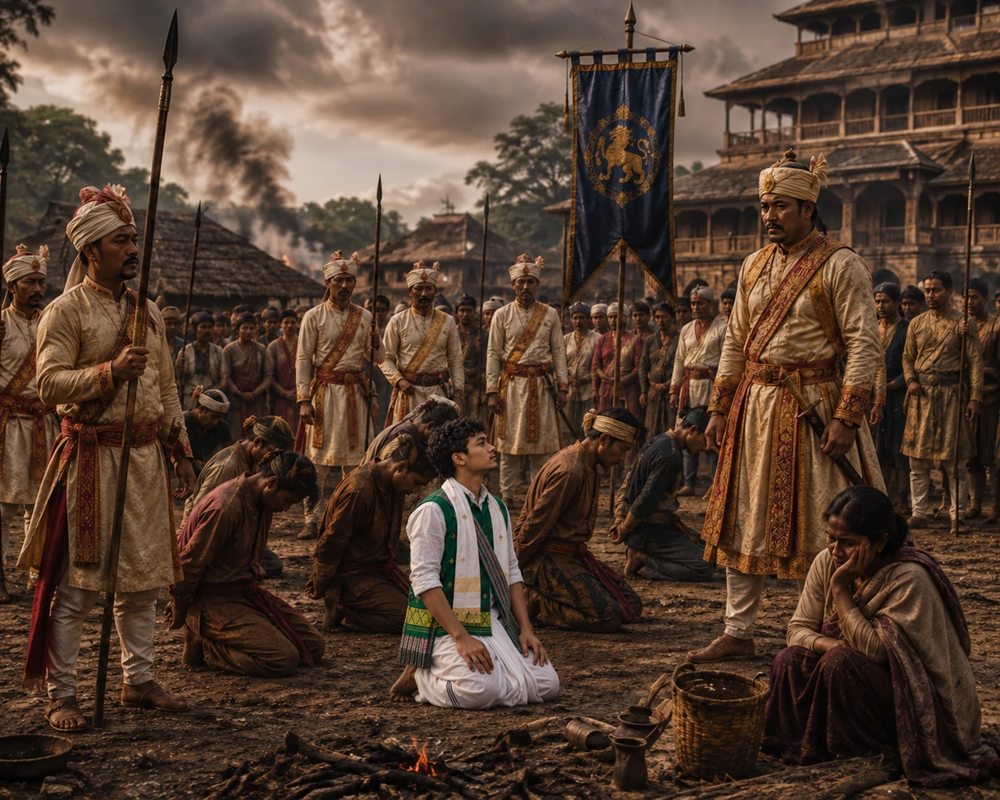

Royal Retribution and Repression of Moamoria Rebels
1770–1772 · The Moamoria risings

Restored royal government executes thousands of Moamoria adherents and leaders, cementing irreversible societal rifts.
Sources have not yet been catalogued for this record.
People: Lakshmi Singha (Sunyeophaa), Ragha Neog (Raghab Borbarua)